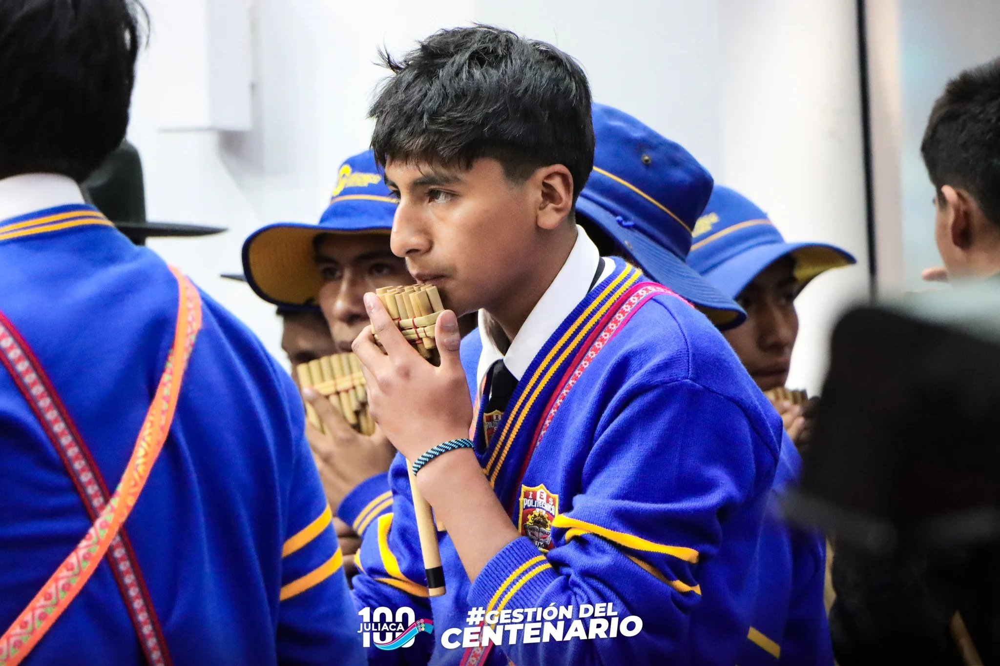

Servicios
Descripción general de los servicios
En el Politécnico combinamos lo mejor de la educación técnica con herramientas digitales para que aprendas a tu ritmo y desde donde estés. Contamos con aulas virtuales, acceso a plataformas educativas, materiales en línea y un entorno pensado para desarrollar tus habilidades de forma práctica y real. Usamos tecnología como Google Workspace para que tu experiencia sea moderna, dinámica y conectada. Más que solo clases, somos una comunidad que te acompaña a crecer. En el Poli, te damos las herramientas. Lo grande lo haces tú.

Accesos rápidos a servicios
Calendario Institucional
Bienestar Estudiantil
Aula Virtual
Pagos en Línea
Normas de uso de los servicios
Para garantizar una experiencia justa y eficiente, te pedimos cumplir con las siguientes reglas:
- Utiliza tu cuenta institucional de forma responsable.
- No compartas tu usuario y contraseña con terceros.
- Respeta los horarios de atención de soporte y bienestar.
- Realiza tus pagos dentro de los plazos establecidos.
- Reporta cualquier falla o error a través de los canales oficiales.
Certificaciones disponibles
El Poli te ofrece la posibilidad de obtener certificaciones intermedias a lo largo de tu carrera, como reconocimiento al avance de tus estudios.
- Certificado de estudios por módulos aprobados.
- Certificación técnica al culminar el 4.º ciclo.
- Certificado de egresado al finalizar todos los cursos del plan.
- Constancias para prácticas profesionales.
¿Cómo solicitar una certificación?
- Ingresa al portal institucional con tu usuario y contraseña.
- Dirígete a la sección de Trámites Académicos.
- Selecciona el tipo de certificado que deseas solicitar.
- Realiza el pago correspondiente.
- Recibirás una notificación cuando esté listo para descargar o recoger.
¿Por qué es importante certificarte?
Las certificaciones acreditan tu avance académico y te permiten acceder a oportunidades laborales mientras aún estudias. En un entorno competitivo, una certificación técnica o modular puede marcar la diferencia en tu hoja de vida.